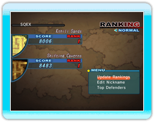
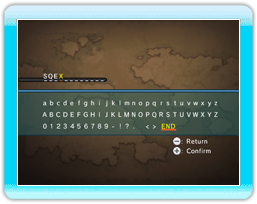
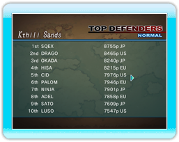

24 |
Classement |
 |
Compare tes scores à ceux des joueurs du monde entier via la Connexion Wi-Fi Nintendo.
Les trois niveaux soumis au classement mondial sont indiqués par une couronne dans l'écran de sélection du niveau. Une fois ces niveaux terminés, il te sera proposé de soumettre ton score au classement mondial. Les scores des modes Facile et Normal sont envoyés et classés séparément.
Les scores soumis au classement mondial sont sauvegardés indépendamment de tes autres meilleurs scores, et sont effacés du classement mondial le premier de chaque mois.
Tu peux soumettre un score au classement mondial à tout moment tant qu'il n'a pas déjà été envoyé.
Mise à jour des classements Cette option envoie tous tes meilleurs scores, si applicables. Les classements ne peuvent être mis à jour que toutes les 10 minutes.

Modifier le pseudo Pour soumettre tes scores au classement mondial, tu dois d'abord choisir un pseudo. Un pseudo peut contenir jusqu'a 12 caractères. 
Meilleurs Joueurs Tu peux consulter ici les meilleurs scores des joueurs du monde entier. Le classement mondial est réinitialisé le premier de chaque mois, à 1 heure (heure d'hiver française).  |
 |